SentinelSCADA › Server Setup Guide › Part 5
This part assumes the server from Part 3 is working, and that other computers can reach it as set up in Part 4. It applies equally in XML mode and, later, in the SQLite mode covered in Part 6.
Without HTTPS, everything between a browser and the server travels as plain text: the passwords people type, and the live values on the screens. Anyone who can see that network traffic can read it. HTTPS encrypts the connection, and it lets the browser check that it is talking to your server and not to something pretending to be it.
HTTPS protects the connection and nothing else. You still need Require login switched on and the default passwords changed, as in Part 3.
A certificate is issued for names, and the browser compares them with the address you type. If you type a name that is not in the certificate, you get a warning. So clients must browse by the server’s host name, such as https://sentinel-srv:5443, and not by its IP address.
This is why we named the server in Part 1: the certificate carries that name. Check yours now with hostname, and rename it before you make a certificate if you need to. A certificate made for a different name will not match.
The Launcher can make a certificate for you. Open Advanced Settings… from the tray menu. The HTTPS section is at the bottom of the Networking tab.
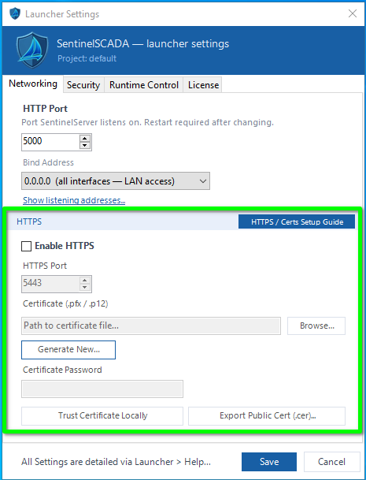
Tick Enable HTTPS first. That unlocks the rest of the section. Then press Generate New….
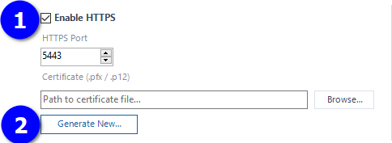
The Generate Certificate window suggests everything you need:
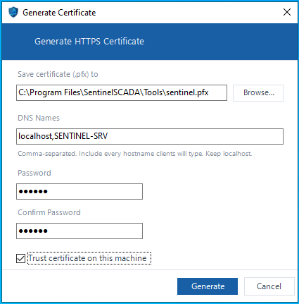
Tools folder of the installation, as sentinel.pfx.localhost and this computer’s name. Keep localhost: the Launcher’s own windows always use it. Add any other name that clients will type, separated by commas..pfx file holds the server’s private key. Remember three things:
.pfx and its password with your licence file..pfx to other computers. Other computers only need the public certificate, the .cer file that you export below. The .pfx must stay on the server.Press Generate. Because you asked for it to be trusted, Windows shows a security warning.
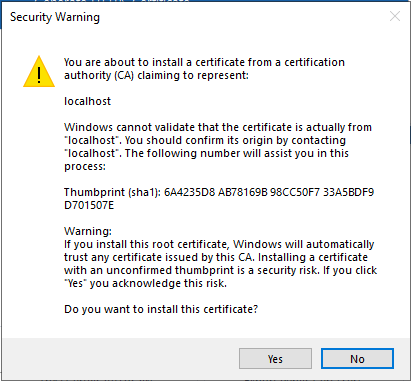
The warning is Windows’ standard wording for any certificate that nothing else vouches for. It says that Windows cannot check where the certificate came from. That is true of every self-made certificate, and you made this one just now, so it is safe to choose Yes. Note the thumbprint; it identifies this certificate, and you will see it again.
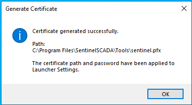
The Launcher fills in the certificate path and its password for you.
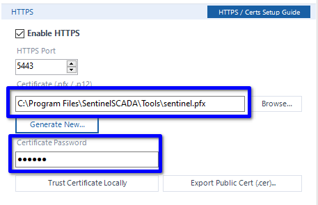
The same certificate can be made with New-SentinelCert.ps1 in the Tools folder. It is the script that the window above runs. Give it every name the certificate should cover:
.\New-SentinelCert.ps1 -DnsName localhost,SENTINEL-SRVIt asks for a password. Leave -Password off the command line so that it does not end up in your command history. Like the other scripts, read it before you run it.
With the certificate path and password filled in, press Save. The Launcher asks to restart the server, because the change only takes effect when the server starts. Choose Yes.
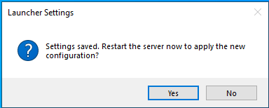
HTTPS listens on port 5443, which the -OpenFirewall step in Part 4 already allowed through the firewall. Plain HTTP on port 5000 stays available for this computer itself.
Now open the web client on the server again, from the tray menu or at https://localhost:5443. The padlock shows that the browser trusts the certificate.
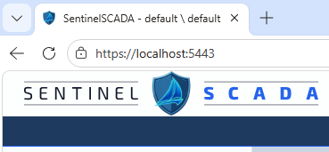
The Launcher’s Server Status window follows along. It now shows https://localhost:5443 under its title, with the server online.
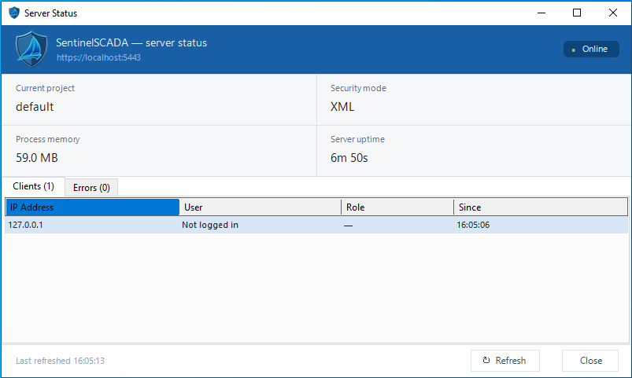
The client is listed as 127.0.0.1, where it was ::1 in Part 3. Both mean this computer.
Get-Process msedge, chrome -ErrorAction SilentlyContinue | Stop-Process -Force.cer file on another computer..cer on every other computer, and fully close and reopen each browser.Another computer must be able to turn the name SENTINEL-SRV into the server’s address. On a network with name lookup (DNS), that happens by itself. On a small or isolated network, such as the VirtualBox set-up in this guide, it does not, and you add a line to the hosts file on each client computer.
On the client, start Notepad as administrator: press the Windows key, type notepad, right-click it and choose Run as administrator. Choose File > Open, paste this path and press Enter. If the folder looks empty, change the file type to All Files.
C:\Windows\System32\drivers\etc\hostsAdd a line at the bottom, with the server’s address, then a space or a Tab, then its name. Then save with Ctrl+S.
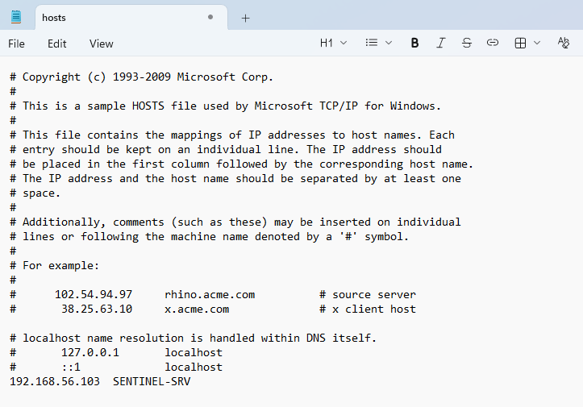
The address is the one you found in Part 4. If the server’s address ever changes, change this line too.
Before you work on certificates on a remote PC, check that it can find the server and reach its HTTPS port. Run these in PowerShell on the remote PC.
ping SENTINEL-SRV usually gets no reply even when everything is working. A silent ping tells you nothing about SentinelSCADA. Use the two checks below instead.First, check that the name finds the server. The answer should be the server’s address:
Resolve-DnsName SENTINEL-SRVName Type TTL Section IPAddress
---- ---- --- ------- ---------
SENTINEL-SRV A ... Answer 192.168.56.103If the name is not found, or gives the wrong address, correct the entry in the hosts file.
Second, check that the HTTPS port answers:
Test-NetConnection SENTINEL-SRV -Port 5443ComputerName : SENTINEL-SRV
RemoteAddress : 192.168.56.103
RemotePort : 5443
InterfaceAlias : Ethernet 2
SourceAddress : 192.168.56.1
TcpTestSucceeded : TrueTcpTestSucceeded : True means the name resolves, the firewall rule for port 5443 is in place and the server is listening. If it says False, check that the firewall rules from Part 4 are in place, that the server was restarted after you switched HTTPS on, and that the address is the right one.
The server’s own browser already trusts the certificate. Every other computer needs to be told to trust it too, or its browser will show a warning. Try it first, to see what a visitor would see. On the remote PC, go to https://sentinel-srv:5443.
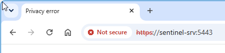
The page says Your connection isn’t private (in Chrome, with the code NET::ERR_CERT_AUTHORITY_INVALID). It is a correct warning: the browser has no reason yet to believe this certificate.
On the server, open Advanced Settings… and press Export Public Cert (.cer)…. Choose where to save the file.
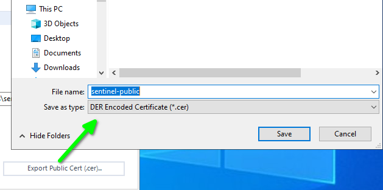
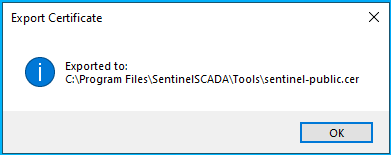
The .cer file contains only the public part of the certificate, with no private key, so it is safe to copy around. Copy it to the remote PC by whatever route you trust: the shared folder from Part 1, a USB drive, or anything else.
On the remote PC, open PowerShell and import the file into the trusted store for your account. Use the real path to the file.
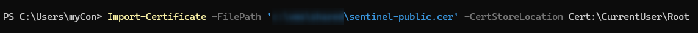
Import-Certificate -FilePath 'C:\path\to\sentinel-public.cer' -CertStoreLocation Cert:\CurrentUser\RootWindows asks you to confirm, with the same warning as before. Check that the thumbprint is the one you saw when you made the certificate, then choose Yes.
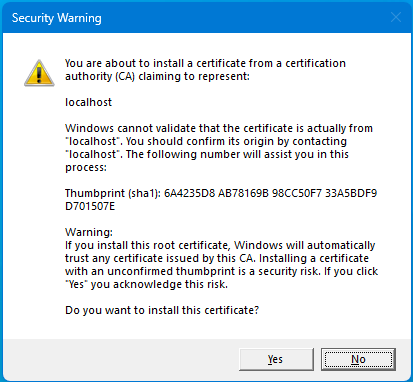
PowerShell then lists the certificate that was added.
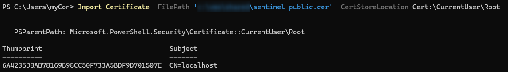
This trusts the certificate for your own Windows account only. Each person who uses the remote PC needs to do this for their own account.
Now close the browser completely, as described above, open it again and go to https://sentinel-srv:5443. The browser shows no warning, and the web client loads. The banner asks you to sign in, because login is required.
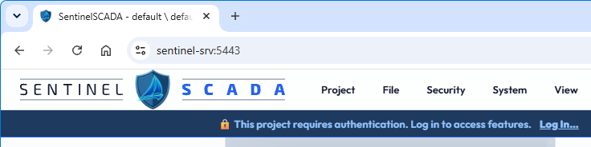
Click the icon at the left of the address and choose the certificate details if you want to see the names it covers: localhost and SENTINEL-SRV.
As before, a remote client waits on the standby screen until someone at the server chooses Run Mode, and only one client is served at a time on an evaluation edition.
http://localhost:5000 still works.HSTS (HTTP Strict Transport Security) is a rule that a server gives to browsers: from now on, talk to me only over HTTPS. When SentinelSCADA answers over HTTPS, it adds a header that tells the browser to remember this for seven days. For those seven days, if you type an http:// address for the same name, the browser changes it to https:// itself, before it sends anything. This protects against someone on the network tampering with that first, unencrypted request.
The rule applies to the name, not to a single port. After a browser has visited https://sentinel-srv:5443, it will also turn http://sentinel-srv:5000 into https://sentinel-srv:5000. The plain HTTP port does not speak HTTPS, so the browser shows This site can’t provide a secure connection (ERR_SSL_PROTOCOL_ERROR). This is harmless. It means the browser did not reach the redirect, not that the server is wrong.
So: use https://sentinel-srv:5443, and bookmark it.
The plain HTTP port still redirects any client that has not been to the HTTPS address, which is how a browser with no HSTS memory, such as a private window, arrives at HTTPS. You can check the redirect itself without a browser, from PowerShell on another computer:
curl.exe -I http://sentinel-srv:5000HTTP/1.1 308 Permanent Redirect
Server: Kestrel
Location: https://sentinel-srv:5443/If you want a browser to forget the HSTS rule, for example to test the redirect, open the browser’s HSTS page (chrome://net-internals/#hsts in Chrome, edge://net-internals/#hsts in Edge), type the server’s name under Delete domain security policies and press Delete. In Chrome this made the redirect work again. Be aware that visiting the HTTPS address again records the rule afresh.
Work through these in order. Most certificate problems are one of the first two.
NET::ERR_CERT_COMMON_NAME_INVALID). The name you typed is not in the certificate. Browse by a name that is, or make a new certificate that includes it.$c = New-Object Net.Sockets.TcpClient('SENTINEL-SRV',5443); $s = New-Object Net.Security.SslStream($c.GetStream(),$false,{$true}); $s.AuthenticateAsClient('SENTINEL-SRV'); $x = New-Object Security.Cryptography.X509Certificates.X509Certificate2($s.RemoteCertificate); $x | Format-List Subject, Thumbprint, DnsNameList, NotBefore; $c.Close()You now have a server that browsers reach over an encrypted connection, with a certificate that the server’s own browser and your remote PC both trust.
If you are using a virtual machine, shut down the guest and take a snapshot called HTTPS working.